![In First picture 3.2 ye rectangle with 3 blue squares of ye column and 2 blue parts of one tenths in the first two squares. In second picture 6.4 ye rectangle with 3 green squares of two column and 2 green parts of one tenths in the first row squares and 1 green part of one tenths in the first and the second rows respectively. In third picture 9.6 ye rectangle with 3 blue squares of first column and 3 green squares of two column are added and 2 green parts of one tenths in the first row squares and 1 green part and 1 blue part of one tenths in the first and the second rows respectively.](images/image-9.png)
Learning Objectives
To know the rounding of decimal numbers.
To understand the four fundamental operations on decimal numbers.
Recap Decimal numbers
We have studied about decimal numbers in the previous term. Let us recall them now by answering the following questions.
Try these
1. Represent the fraction 1 by 4 in decimal form.
2. What is the place value of 5 in 63.257
3. Identify the digit in the tenth place of 75.036.
4. Express the decimal number 3.75 as a fraction
5. Write the decimal number for the fraction 5 1 by 5
6. Identify the bigger number: 0.567 or 0.576
7. Compare 3.30 and 3.03 and identify the smaller number
8. Put the appropriate sign (less than, greater than, equal) 2.57 Dash 2.570
9. Arrange the following decimal numbers in ascending order.
5.14, 5.41, 1.54, 1.45, 4.15, 4.51
Mani went to market to purchase vegetables
The price details of five different vegetables on that day are shown in the following table.
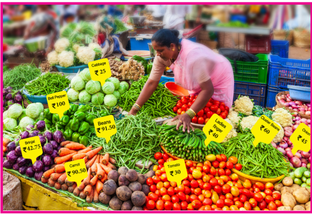
Serial Number |
Name of the Vegetables |
Price Per 1 Kilo Gram (in ₹) |
Serial Number 1 |
Ladies Finger |
Price 40.00 rupees Per Kilo Gram |
Serial Number 2 |
Brinjal |
Price 42 rupees 75 paise Per Kilo Gram |
Serial Number 3 |
Beans |
Price 91 rupees 50 paise Per Kilo Gram |
Serial Number 4 |
Carrot |
Price 90 rupees 50 paise Per Kilo Gram |
Serial Number 5 |
Bell Pepper |
Price 100.00 rupees Per Kilo Gram |
Mani wanted to round of each price to the nearest rupees.
How will you decide on rounding each number?
Rounding of decimals would be really useful for estimating amounts of money, duration of time, measure of distances and many other physical quantities. Let us learn the same here.
Box item
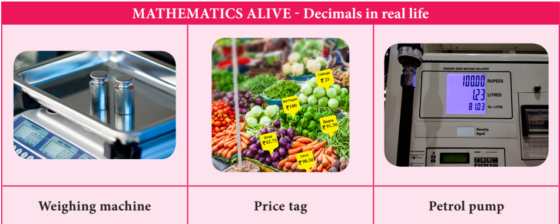
You can round decimals just in the same way as you round whole numbers.
To round a decimal
First underline the digit that is to be rounded. Then look at the digit to the right of the underlined digit.
If that digit is less than 5, then the underlined digit remains the same.
If that digit is greater than or equal to 5, add 1 to the underlined digit.
After rounding of, ignore all the digits after the underlined digit.
Example 1.1
Rounded 2.367 to the nearest whole number.
Solution
Underline the digit to the rounded 2.367 (number 2 before the decimal is underlined)
Since the digit next to the underlined digit is 3 which is less than 5, the underlined digit 2 remains the same.
Also look at the number line shown below:
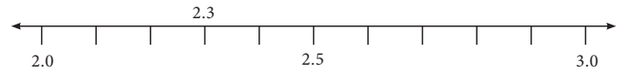
On the number line, we observe that 2.3 is closer to 2.0 than 3.0
Hence, the rounded value of 2.367 to the nearest whole number is 2
Example 1.2
Round 99.95 to the nearest tenth place.
Solution
Underline the digit to the rounded 99.95 (The first place after the decimal is underlined)
Since the digit right to the tenth place is 5, we add 1 to the tenth place (underlined digit) of 99.95 and we get 100 point zero
Look at the number line shown below:
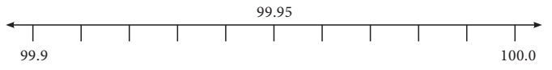
So, the rounded value of 99.95 is 100 point zero
Example 1.3
Round 52.6583 up to 2 places of decimal
Solution
Round 52.6583 up to 2 places of decimal means round to the nearest hundredths place.
Underline the digit in the hundredth place of 52.6583 gives 52.6583 (The second place after the decimal is underlined)
We observe that the digit after the hundredth place value is 8 which is more than 5. Therefore, we should add 1 to the underlined digit. Hence, we get 52.66
So, the rounded value of 52.6583 up to 2 places of decimal is 52.66
Example 1.4
Round 189.0007 up to 3 places of decimal
Solution
Round 189.0007 up to 3 places of decimal means rounding to nearest thousandth place
Underline the digit in the thousandth place 189.0007 gives 189.0007 (the third place after the decimal is underlined)
In 189.0007 we observe that the digit next to the thousandth place value is 7, which is greater than 5.
Therefore, we should add 1 to the underlined digit.
Hence, we get 189.001.
So, the rounded value of 189.0007 up to 3 places of decimal is 189.001.
Do you Know?
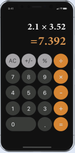
Now ye day’s calculators, computers and even mobile phones were used for multiplication and division of decimals. But, actually multiplication of decimals using logarithm tables will be more useful and handy.
Exercise 1.1
1. Round each of the following decimals to the nearest whole number.
1) 8.71
2) 26.01
3) 69.48
4) 103.72
5) 49.84
6) 101.35
7) 39.814
8) 1.23
2. Round each decimal number to the given place value.
1) 5.992 to tenth place
2) 21.805 to hundredth place
3) 35.0014 to thousandth place.
3. Round the following decimal numbers up to 1 places of decimal
1) 123.37
2) 19.99
3) 910.546
4. Round the following decimal numbers up to 2 places of decimal
1) 87.755
2) 301.513
3) 79.997
5. Round the following decimal numbers up to 3 places of decimal
1) 24.4003
2) 1251.2345
3) 61.00203
Already we are familiar with decimal numbers. We know how to represent ye decimal number as a fraction and the place values of digits. Now, let us learn the operations on decimal numbers.
Iniya has purchased notebooks for 46 rupees 50paise and a pencil box for 16 rupees 50 paise. How much she will get as balance if she paid 100 rupees to the shop keeper?
Price of ye note book equal to 46 rupees 50 paise; Price of ye pencil box equal to 16 rupees 50 paise
To find the amount to be paid, we have to add the price of both the items.
To get the balance amount we have to subtract the total expense from 100 rupees. To know the total expenses and the balance money, we need to understand addition and subtraction of decimals.
Addition and Subtraction of decimals through models
Decimal grid or area models can be used to understand the process of addition and subtraction using decimal numbers.
1) Grid Model
We see below the grids to represent the decimal numbers, one point zero, zero. point one and zero point zero one
One whole, 10 by 10 Grid represents 1 or one point zero
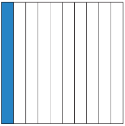
Each column represents one tenth or 0.1
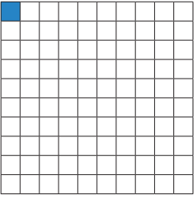
Each square represents one hundredth or 0.01
Having these grids let us try to do addition and subtraction of decimal numbers.
Example 1.5
Find the sum of 0.16 and 0.77 using decimal grid models
Solution
Here, 0.16 equal to 16 by 100 and 0.77 equal to 77 by 100
First shade the region 0.16 and then shade 0.77
That is, first shade 16 squares out of 100 and then shade 77 more squares , which means total shaded region is 93 squares out of 100.
The total shaded area is the sum
So, 0.16 + 0.77 equal to 0.93
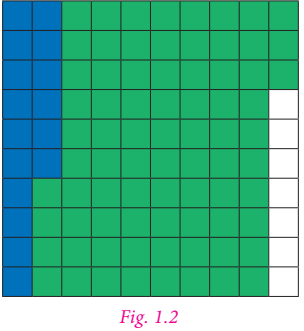
Example 1.6
Find 0.52 minus 0.08 using decimal grid models
Solution
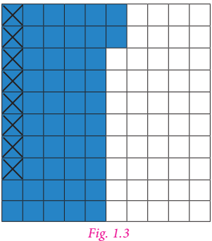
Here0.52 equal to 52 by 100 and 0.08 equal to 8 by 100. First shade the region 0.52 then cross out 0.08, which is 8 by 100 from the shaded area. The left out shaded region without cross marks is the difference. So, 0.52 minus 0.08 equal to 0.44
Example 1.7
Find the value of 0.72 minus 0.51 by using grids
Solution
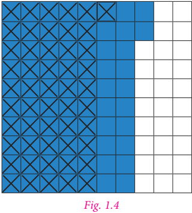
Take ye square of 100 boxes. Shade 72 boxes to represent 0.72
Then strike out 51 boxes out of 72 shaded boxes to subtract 0.51 from 0.72
The leftover shaded boxes represent the required value.
Therefore, 0.72 minus 0.51 equal to 0.21
Try these
Find the following using grid models:
1) 0.83 + 0.04
2) 0.35 minus 0.09
2) Area Model
The whole number (unit place) which is ye part of decimals represents ye square area and 1 by 10th part of this square area which is ye thin rectangular strip represents the tenth place of the decimal (0.1) and 1 by 100th part of this rectangular strip represents the hundredth place value (0.01) and the same process will be continued for the next place and so on.
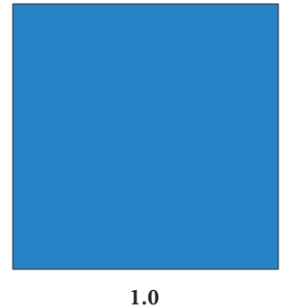
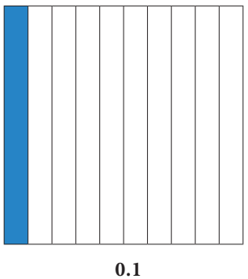
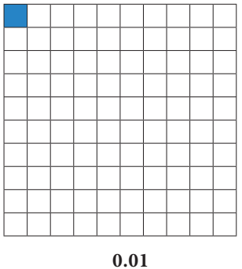
Having these square and rectangular area let us try to do addition and subtraction of decimal numbers.
Note
1 by 100th part is the same as 1 by 10th of 1 by 10.
Example 1.8
Add 3.2 + 6.4
Solution
Here 3.2 is represented in Blue colour and 6.4 is represented in Green colour. Hence, the sum of 3.2 and 6.4 is 9.6
Example 1.9
Subtract 7.5 minus 3.4
Solution
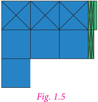
First represent the decimal number 7.5 using 7 squares and 5 rectangular strips. Cross out 3 squares from 7 squares and 4 rectangular strips from 5 rectangular strips to get the difference (see figure 1.5)
Hence, 7.5 minus 3.4 equal to 4.1
Try these
Using the area models solve the following:
1) 1.2 + 3.5
2) 3.5 minus 2.3
3) Place value grid model
So far, we have discussed grid models to do addition and subtraction of decimal numbers. Earlier we have studied representation of decimal numbers in place value tables. Let us the same representation for addition and subtraction of decimal numbers.
For example, while adding 4.83 and 1.67, we have
Decimal Number |
Ones |
Tenth |
Hundredth |
Decimal Number 4.38 |
4 Ones |
3 Tenth |
8 Hundredth |
Decimal Number 1.67 |
1 Ones |
6 Tenth |
7 Hundredth |
Decimal Number 6.05 |
6 Ones |
0 Tenth |
5 Hundredth |
Therefore, 4.38 + 1.67 equal to 6.05
Example 1.10
Add the following:
1). 30.9 + 52.73
2). 25.67 + 33.856
Solution
1). 30.9 + 52.73
Let us use the place value grid.
Decimal Number |
Tens |
Ones |
Tenth |
Hundredth |
Decimal Number 30.9 |
3 Tens |
0 Ones |
9 Tenth |
0 Hundredth |
Decimal Number 52.73 |
5 Tens |
2 Ones |
7 Tenth |
3 Hundredth |
Decimal Number 83.63 |
8 Tens |
3 Ones |
6 Tenth |
3 Hundredth |
Therefore,30.9 + 52.73equal to 83.63
(Since the digits in the decimal place of 52.73 is 2 and 30.9 is 1, we should add 0 at the hundredth place of 30.9 to equalise the digits in the decimal place)
2). 25.67 + 33.856
Let us use the place value grid
Decimal Number |
Tens |
Ones |
Tenth |
Hundredth |
Thousandth |
Decimal Number 25.67 |
2 Tens |
5 Ones |
6 Tenth |
7 Hundredth |
0 Thousandth |
Decimal Number 33.856 |
3 Tens |
3 Ones |
8 Tenth |
5 Hundredth |
6 Thousandth |
Decimal Number 59.526 |
5 Tens |
9 Ones |
5 Tenth |
2 Hundredth |
6 Thousandth |
Therefore, 25.67 + 33.856 equal to 59.526
Note
Adding zeros at the right end of decimal digits will not change the value of the number
Example 1.11
Everyday Malar travels 1.820 Kilo metre by bus and 295 metre by walk to reach the school. Find the distance of school from her house in kilo metre.
Solution
Distance travelled by bus equal to 1.820 kilo metre
Distance covered by walk equal to 0.295 kilo metre
Total Distance equal to 1.820 + 0.295
equal to 2.115 kilo metre
Therefore, the school is situated at the distance of 2.115 kilo metre from her house.
(1000 Metre equal to 1 Kilo Metre
1 Metre equal to 1 divided by 1000 Kilo Metre
Hence, 295 Metre equal to 295 divided by 1000 Kilo Metre
Equal to 0.295 Kilo Metre)
Example 1.12
Subtract 2.85 from 4.97
Solution
4.97 minus 2.85 equal to dash
Let us use the place value grid
Decimal Number |
Ones |
Tenth |
Hundredth |
Decimal Number 4.97 |
4 Ones |
9 Tenth |
7 Hundredth |
Decimal Number 2.85 |
2 Ones |
8 Tenth |
5 Hundredth |
Decimal Number 2.12 |
2 Ones |
1 Tenth |
2 Hundredth |
Therefore, 4.97 minus 2.85 equal to 2.12
Example 1.13
Subtract 3.09 from 12.7
12.7 minus 3.09 equal to dash
Let us use the place value grid
Decimal Number |
Tens |
Ones |
Tenth |
Hundredth |
Decimal Number 12.7 |
1 Tens |
2 Ones |
7 Tenth |
0 Hundredth |
Decimal Number 3.09 |
|
3 Ones |
0 Tenth |
9 Hundredth |
Decimal Number 9.61 |
|
9 Ones |
6 Tenth |
1 Hundredth |
Therefore, 12.7 minus 3.09 equal to 9.61
Note
1. We can equalize the decimal digits of given numbers by adding zero at the right end of a decimal number
2. Zeros are added at the right end of decimal digits of ye decimal number that are to be added or subtracted.
Example 1.14
Subtract 32.042 from 86.9
Solution
|
86.900 |
(minus) |
32.042 |
|
54.858 |
Therefore, 86.9 minus 32.042 equal to 54.858
Try these
Complete the magic square in such ye way that rows, columns and diagonals give the same sum 1.5
0.8 |
Fill in the blank |
0.6 |
Fill in the blank |
0.5 |
Fill in the blank |
0.4 |
Fill in the blank |
Fill in the blank |
Example 1.15
Naren bought 7.4 kilo gram of mangoes. On the way home, he gave 4.650 kilo gram of mangoes to his sister’s family. Find the weight of the remaining mangoes.
Solution
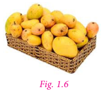
Mangoes bought by Naren equal to 7.4 kilo gram
Mangoes given to Naren’s sister equal to 4.650 kilo gram
Weight of remaining mangoes equal to 7.400 minus 4.650
equal to 2.750 kilo gram
Therefore, the weight of the remaining mangoes is 2.750 kilo gram.
Do you know?
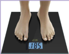
We use decimals every day, while dealing with money, weight, length etcetera. Decimal numbers are used in situations where more accuracy is required.
Exercise 1.2
1. Add by using grid 0.51 + 0.25
2. Add the following by using place value grid
1) 25.8 + 18.53
2) 17.4 + 23.435
3. Find the value of 0.46 minus 0.13 by grid model.
4. Subtract the following by using place value grid.
1) 6.567 from 9.231
2) 3.235 from 7
5. Simplify:23.5 minus 27.89 + 35.4 minus 17
6. Sulaiman bought 3.350 kilo gram of Potato, 2.250 kilo gram of Tomato and some Onions. If the weight of the total items is 10.250 kilo gram, then find the weight of Onions?
7. What should be subtracted for 7.1 to get 0.713?
8. How much is 35.6 kilo metre less than 53.7 kilo metre?
9. Akilan purchased ye geometry box for 25.75 rupee ,ye pencil for 3.75 rupee and ye pen for 17.90. rupee He gave 50 rupee to the shopkeeper. What amount did he get back?
10. Find the perimeter of an equilateral triangle with ye side measuring 3.8 centimetre.
Objective type questions
11. one point zero + 0.83 equal?
1) 0.17
2) 0.71
3) 1.83
4) 1.38
12. seven point zero minus 2.83 equal?
1) 3.47
2) 4.17
3) 7.34
4) 4.73
13. Subtract 1.35 from 3.51
1) 6.21
2) 4.86
3) 8.64
4) 2.16
14. Sum of two decimals is 4.78. If one decimal is 3.21, then the other one is
1) 1.57
2) 1.75
3) 1.59
4) 1.58
15. The difference of two decimals is 86.58 and one of the decimals is 42.31 find the other one
1) 128.89
2) 128.69
3) 128.36
4) 128.39
Mathan wants to buy ye shirt material which costs 75 rupee 50 paise per metre. He needs 1.5 metre to stitch ye shirt. How much does he have to pay? Here we need to multiply 75.50 and 1.5. In real life, there are many situations where we need to multiply decimal numbers.
1) Decimal multiplication through models
Let us try to understand decimal multiplication using grid model.
Let us find 0.1 multiplied by 0.1
0.1 equal to 1 by 10. Therefore, 0.1 multiplied by 0.1 equal to 1 by 10 multiplied by 1 by 10
That is, 1 by tenth of 1 by 10
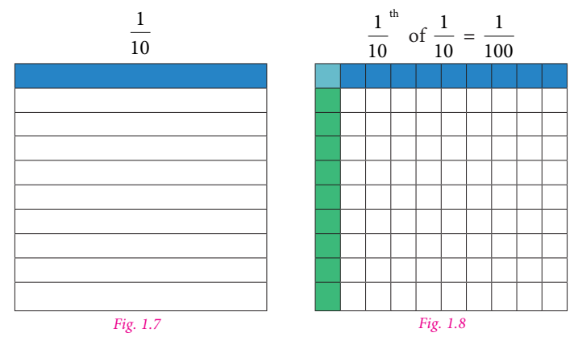
Shade horizontally 1 by 10 by blue colour (Figure 1.7). Shade vertically 1 by 10 by green colour (Figure 1.8)
Then 1 by 10th of 1 by 10 is the common portion, that is 1 by hundredth.
Therefore, 1 by 10 multiplied by 1 by 10 equal to 1 by 100 equal to 0.01
Hence, 0.1 multiplied by 0.1equal to 0.01
Example 1.16
Find the value of 0.3 multiplied by 0.4
Solution
First shade 4 rows of the grid in blue colour to represent 0.4. Shade 3 columns of the grid in green colour to represent 0.3 of 0.4. Now 12 squares represent the common portion. This represents 12 hundredth or 0.12. Hence 0.3 multiplied by 0.4 equal to 0.12
![In the first picture,The area of ye square is divided into 10 divisions horizontally in which four rows are shaded in blue colour representing 0.4 In the second picture A rectangle with 100 squares in which 10 rows and 10 columns are present . The first 3 columns of 10 squares are shaded in green colour and the 10 squares in the 1,2,3, and 4th rows are shaded in blue colour . the first 30 squares in the column and the 40 squares in the row is shaded in blue colour while the first four squares of 1,2 and 3rd column are given in sky blue colour which is a combination of blue and green colours.](images/image28.png)
Note
The number of decimal digits in 0.12 is two. So, we can conclude that the number of decimal digits in the product of two decimal numbers is equal to the sum of decimal digits that are multiplied.
Area Model
We have already learnt about the area model in the addition and subtraction of decimal numbers. In the same way we are going to multiply the decimal numbers. Now we shall see an example.
Example 1.17
Multiply 3.2 multiplied by 2.1
Solution
Let us try to represent the product of decimal numbers (3.2 multiplied by 2.1) as the area of ye rectangle. Let us consider ye rectangular portion as shown in figure 1.9
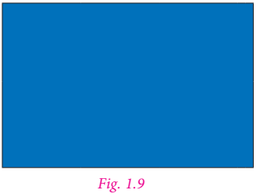
The rectangular portion is split into 3 wholes and 2 tenth along its length (Figure 1.10)
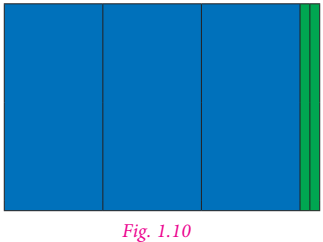
Since, 3 wholes and 2 tenth is multiplied with 2.1, we split the same area into 2 whole and 1 tenth along its breadth (figure 1.11)
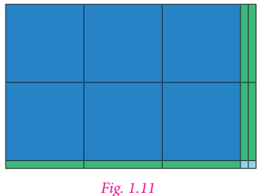
Here, each row contains 3 whole and 2 tenth. Each column contains 2 wholes and 1 tenth. The entire area model represents 6 wholes, 7 tenth and 2 hundredth.
Therefore, 3.2 multiplied by 2.1 equal to 6.72
Think
How are the products 2.1 multiplied by 3.2 and 21 multiplied by 32 alike? How are they different.
Try these
1) Shade the grid to multiply 0.3 multiplied by 0.6
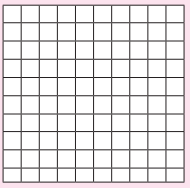
2) Use the area model to multiply 1.2 multiplied by 2.5
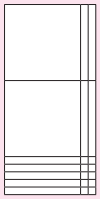
Example 1.18
Multiply the following
1). 2.3 multiplied by 1.4
2). 5.6 multiplied by 3.2
Solution
1). 2.3 multiplied by 1.4
First, let us multiply 23 multiplied by 14
23 multiplied by 14 equal to 322
Now, 2.3 multiplied by 1.4 equal to 3.22
2.3 one decimal place
Multiplied by 1.4 one decimal place
92
23
3.22 two decimal places
2). 5.6 multiplied by 3.2
First, let us multiply 56 multiplied by 32.
56 multiplied by 32 equal to 1792
Now, 5.6 multiplied by 3.2 equal to 17.92
5.6 one decimal place
multiplied by 3.2 one decimal place
112
168
17.292 two decimal places
Example 1.19
Latha purchased ye churidar material of 3.75 metre at the rate of 62.50 rupee per metre. Find the amount to be paid.
Solution
Cost of churidar material equal to 62.50 rupee per metre
Length of Churidar material equal to 3.75 metre
Amount to be paid equal 3.75 multiplied by 62.50
equal to 234.3750 rupee
equal to 234.38 rupee (rounded to two decimals)
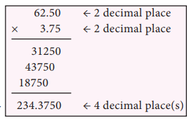
Example 1.20
The length and breadth of ye rectangle is 23.5 centimetre and 1.5 centimetre respectively. Find the area of the rectangle.
Solution
Area of ye rectangle equal to length multiplied by breadth square units
Here, length equal to 23.5 centimetre, breadth equal to 1.5 centimetre
Area of the rectangle equal to 23.5 multiplied by 1.5
equal to 35.25 square centimetre.
23.5 one decimal place
Multiplied by1.5 one decimal place
1175
235
35.25 two decimal places
2) Multiplication of Decimal Numbers by 10, 100 and 1000
We have studied about conversion of decimals into fractions in the first term. Consider 45.6 and 4.56
Expressing these decimal numbers into fractions, we get
45.6 equal to 40 + 5 + 6 divided by 10 equal to 45 + 6 divided by 10 equal to 456 by 10
Now, 4.56 equal to 4 + 5 divided by 10 + 6 divided by 100 equal to 456 by 100
Comparing the two fractions, we see that if there is one digit after the decimal point, then the denominator is 10 and if there are two digits after the decimal point, then the denominator is 100.
Let us see what happens if ye decimal number is multiplied by 10, 100 and 1000
Observe the following table and complete it.
Try these
2.35 multiplied by 10 equal to 235 divided by 100 multiplied by 10 equal to 235 divided by 10 equal to 23.5 |
7.63 multiplied by 10 equal to Dash |
63.237 multiplied by 10 equal to Dash |
2.35 multiplied by 100 equal to 235 divided by 100 multiplied by 100 equal to 235 equal to 235.0 |
7.63 multiplied by 100 equal to Dash |
63.237 multiplied by 100 equal to Dash |
2.35 multiplied by 1000 equal to 235 divided by 100 multiplied by 1000 equal to 2350.0 |
7.63 multiplied by 1000 equal to Dash |
63.237 multiplied by 1000 equal to Dash |
0.6 multiplied by 10 equal to 6 divided by 10 multiplied by 10 equal to 6 |
0.6 multiplied by 100 equal to 6 divided by 10 multiplied by 100 equal to Dash |
0.6 multiplied by 1000 equal to 6 divided by 10 multiplied by 1000 equal to Dash |
Can you observe any pattern in the above table? There is ye pattern in the shift of decimal points of the products in the table. In 2.35 multiplied by 10 equal to 23.5 the digits are the same, that is 2, 3, 5. Observe 2.35 and 23.5. To which side has the decimal point been shifted, right or left? The decimal point is shifted to the right by one place. Also note that 10 is one zero followed by 1.
In 2.35 multiplied by 100 equal to 235.0, observe 2.35 and 235. To which side and by how many digits has the decimal point been shifted? The decimal point has been shifted to the right by two places. Note that 100 is two zeros followed by 1
Similarly, in 2.35 multiplied by 1000 equal to 2350 point zero, we see that the decimal point has been shifted to the right by three places by adding one more digit 0 to the number 235. Note that 1000 is three zeros followed by 1.
So, we conclude that when a decimal number is multiplied by 10, 100 or 1000, the digits in the product are same as in the decimal number but the decimal point in the product is shifted to the right by as many places as there are zeros followed by 1.
Based on these observations we can now say,
0.02 multiplied by 10 equal to 0.2; 0.02 multiplied by 100 equal to 2 and 0.02 multiplied by 1000 equal to 20
Can you find the value of following?
2.76 multiplied by 10 equal to ?
2.76 multiplied by 100 equal to ?
2.76 multiplied by 1000 equal to ?
Try these
1. 9.13 multiplied by 10
2. 9.13 multiplied by 100
3. 9.13 multiplied by 1000
Example 1.21
Find the value of the following
1) 3.26 multiplied by 10
2) 3.26 multiplied by 100
3) 3.26 multiplied by 1000
4) 7.01 multiplied by 10
5) 7.01 multiplied by 100
6) 7.01 multiplied by 1000
Solution
1) 3.26 multiplied by 10 equal to 32.6
2) 3.26 multiplied by 100 equal to326 point zero
3) 3.26 multiplied by 1000equal to3260 point zero
4) 7.01 multiplied by 10 equal to 70.1
5) 7.01 multiplied by 100 equal to 701 point zero
6) 7.01 multiplied by 1000 equal to 7010 point zero
Example 1.22
ye concessional entrance ticket for students to visit ye zoo is 12.50.rupee How much has to be paid for 20 tickets?
Solution
Cost of one ticket equal to 12.50 rupee
Amount to be paid for 20 students equal to 12.50 multiplied by 20 equal to 250.00 rupee
We have already discussed about the multiplication of decimal numbers by 10, 100 and 1000. In the same way we can find patterns for multiplying decimal numbers by 0.1, 0.01 and 0.001. Observe the following:
12.3 multiplied by 0.1 equal to 123 divided by 10 multiplied by 1 multiplied by 10 equal to 123 divided by 100 equal to 1.23
12.3 multiplied by 0.01 equal to 123 divided by 10 multiplied by 1 multiplied by 100 equal to 123 divided by 1000 equal to 0.123
12.3 multiplied by 0.001 equal to 123 divided by 10 multiplied by 1 multiplied by 1000 equal to 123 divided by 10000 equal to 0.0123
Form the above multiplication we can conclude that, when multiplying by
Zeros may be added as required when multiplied 0.1, 0.01 and 0.001 as mentioned above.
Try these
Complete the following table:
11.6 multiplied by 0.1 |
116 divided by 10 multiplied by 1 divided by 10 |
Fill in the blank |
Fill in the blank |
11.6 multiplied by 0.01 |
Fill in the blank |
Fill in the blank |
Fill in the blank |
11.6 multiplied by 0.001 |
Fill in the blank |
Fill in the blank |
Fill in the blank |
Exercise 1.3
1. Find the product of the following
1) 0.5 multiplied by 3
2) 3.75 multiplied by 6
3) 50.2 multiplied by 4
4) 0.03 multiplied by 9
5) 453.03 multiplied by 7
6) 4 multiplied by 0.7
2. Find the area of the parallelogram whose base is 6.8 centimetre and height is 3.5 centimetre
3. Find the area of the rectangle whose length is 23.7 centimetre and breadth is 15.2 centimetre
4. Multiply the following
1) 2.57 multiplied by 10
2) 0.51 multiplied by 10
3) 125.367 multiplied by 100
4) 34.51 multiplied by 100
5) 62.735 multiplied by 100
6) 0.7 multiplied by 10
7) 0.03 multiplied by 100
8) 0.4 multiplied by 1000
5. ye wheel of ye baby cycle covers 49.7 centimetre in one rotation. Find the distance covered in 10 rotations.
6. ye picture chart costs 1 rupee 50 paise Radha wants to buy 20 charts to make an album. How much does she have to pay?
7. Find the product of the following.
1) 3.6 multiplied by 0.3
2) 52.3 multiplied by 0.1
3) 537.4 multiplied by 0.2
4) 0.6 multiplied by 0.06
5) 62.2 multiplied by 0.23
6) 1.02 multiplied by 0.05
7) 10.05 multiplied by 1.05
8) 101.01 multiplied by 0.01
9) 100.01 multiplied by 1.1
Objective type questions
8. 1.07 multiplied by 0.1 equal to Dash
1) 1.070
2) 0.107
3) 10.70
4) 11.07
9. 2.08 multiplied by 10 equal to Dash
1) 20.8
2) 208.0
3) 0.208
4) 280.0
10. ye frog jumps 5.3 centimetres in one jump. The distance travelled by the frog in 10 jumps is Dash
1) 0.53 centimetre
2) 530 centimetre
3) 53.0 centimetre
4) 53.5 centimetre
ye bale of shirt material consists of 24.75 metre. ye shop keeper wants to make shirt bits each of 1.5 metre outfit. How many bits can be made? To find the answer, we have to divide 24.75 by 1.5
In real life, there are many situations where we need to divide decimal numbers.
1) Decimal Division through models
![Fist picture The area of ye rectangle is divided into 10 divisions vertically and further columns are separated with 10 horizontal lines evenly. now the square is with 100 squares with 10 rows and 10 columns of squares. are shaded in blue colour. second picture The area of a rectangle is divided into 10 divisions vertically and further columns are separated with 10 horizontal lines evenly. now the square is with 100 squares with 10 rows and 1o columns of squares. are shaded in green colour. third picture A rectangle with 100 squares in which 10 rows and 10 columns are present . in first and third column all the 10 squares are shaded in blue colour. the second and fourth of 10 squares are shaded in green colour while the 8 squares in the fifth column are shaded alternatively with blue and green colour respectively.](images/image-12.png)
Here each colour represents the quotient, that is 1.24
Hence, 2.48 divided by 2 equal to 1.24
Let us do the division of 2.48 by 2 in the other way.
Observe the following figure
![Fist picture A rectangle with 100 squares in which 10 rows and 10 columns are present . . the first, second, fifth sixth, ninth and tenth column of 10 squares are shaded in blue colour similarly the third, fourth, seventh and eighth column of 10 squares are shaded in green colour second picture A rectangle with 100 squares in which 10 rows and 10 columns are present . . the first, second, fifth sixth, ninth and tenth column of 10 squares are shaded in green colour similarly the third, fourth, seventh and eighth column of 10 squares are shaded in blue colour third picture A rectangle with 100 squares in which 10 rows and 10 columns are present . in first and second column all the 10 squares are shaded in blue colour. the third and fourth of 10 squares are shaded in green colour while the 8 squares in the fifth column are shaded alternatively with 2 squares in blue and 2 squares in green colour respectively.](images/image-13.png)
Consider 2 wholes, when you divide 2 wholes equally in groups of two’s, each group gets 5 such groups which represents 1 whole.
Next consider the tenth, taking four tenth and dividing it in group of two’s, we get two such groups and each group represents two tenth.
Finally, dividing 8 hundredth in group of two’s, each group has 4 hundredth.
Therefore 2.48 divided by 2 equal to 1 whole 2 tenth 4 hundredth
equal to 1.24
Example 1.23
Divide 6.3 by 3 using area model.
Solution
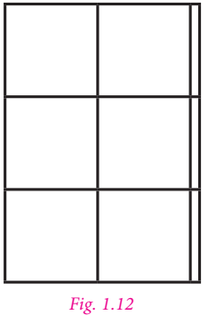
The decimal number 6.3 is shown in figure 1.12
Since 6.3 is divided by 3, separate the areas into 3 equal groups using three different colours as in figure 1.13
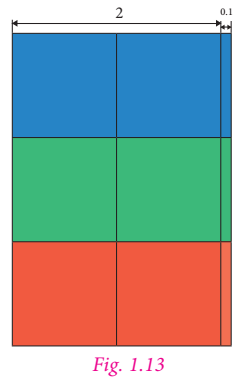
Each group to represents 2.1, which is the quotient.
Therefore, 6.3 divided by 3 equal 2.1
2) Division by 10, 100 and 1000
Let us learn how to divide decimal numbers by 10, 100 and 1000
For example, consider 51.7 divided by 10
Now, 51.7 equal to 517 divided by 10
Therefore, 51.7 divided by 10 equal to 517 divided by 10 multiplied by 1 divided by 10 equal to 517 divided by 100 equal to 5.17
Similarly, 51.7 divided by 100 equal to 517 divided by 10 multiplied by 1 divided by 100 equal to 517 divided by 1000 equal to 0.517
Also, 51.7 divided by 1000 equal to 517 divided by 10 multiplied by 1 divided by 1000 equal to 517 divided by 10000 equal to 0.0517
When decimal numbers are divided in powers of 10, it can be noted that the decimal number so obtained contains the same number of decimal digits as that of zeros in powers of 10.
Let us see whether there is ye pattern for dividing numbers by 10, 100 and 1000.
Observe the following and complete it
.
Try these
36.7 divided by 10 equal to 3.67 |
436.7 divided by 10 equal to 43.67 |
2.3 divided by 10 equal to 0.23 |
27.17 divided by 10 equal to Dash |
36.7 divided by 100 equal to 0.367 |
436.7 divided by 100 equal to Dash |
2.3 divided by 100 equal to Dash |
27.17 divided by 100 equal to Dash |
36.7 divided by 1000 equal to 0.0367 |
436.7 divided by 1000 equal to Dash |
2.3 divided by 1000 equal to Dash |
27.17 divided by 1000 equal to Dash |
Take,36.7 divided by 10 equal 3.67. In 36.7and 3.67, the digits are the same namely, 3, 6 and 7, but the decimal point has been shifted to the left by one place in the obtained decimal number after division. Note that 10 is one zero followed by 1.
Similarly, in 36.7 divided by 100 equal 0.367, the decimal point has been shifted to the left by two places in the obtained decimal number after division. Note that 100 is two zeros followed by 1.
Similarly, in 36.7 divided by 1000 equal 0.0367, the decimal point has been shifted to the left by three places in the obtained decimal number after division. Note that 1000 is three zeros followed by 1.
Hence, we can conclude that while dividing a decimal number by 10, 100 and 1000, the digits of the number (Dividend) and the obtained decimal number after division are the same but the decimal point in the obtained decimal number after division is shifted to the left by as many places as there are zeros followed by 1.
Therefore, we can find 2.68 divided by 10 equal to 0.268
2.68 divided by 100 equal to 0.0268; 2.68 divided by 1000 equal to zero point zero zero two six eight
Try these
Divide the following
1) 17.237 divided by 10
2) 17.237 divided by 100
3) 17.237 divided by 1000
3) Division of ye decimal number by ye whole number
Let us divide ye decimal number by ye whole number.
Consider the following.
1) 7.6 divided by 2
7.6 divided by 2 equal to 7.6 divided by 2
But, 7.6 equal to 76 divided by 10
Therefore, 7.6 divided by 2 equal to 76 divided by 10 multiplied by 1 divided by 2 equal to 1 divided by 10 multiplied by 76 divided by 2
Equal to 1 divided by 10 multiplied by 38 equal to 38 divided by 10 equal 3.8
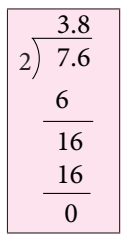
2) Consider 7.26 divided by 2
Now, 7.26 equal to 726 divided by 100
7.26 divided by 2 equal to 726 divided by 100 multiplied by 1 divided by 2 equal to 1 divided by 100 multiplied by 726 divided by 2
Equal to 1 divided by 100 multiplied by 363 equal to 363 divided by 100 equal to 3.63
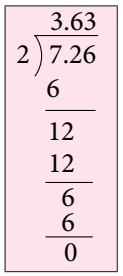
3) 9.6 divided by 8
But, 9.6 equal to 96 divided by 10
Now, 9.6 divided by 8 equal to 96 divided by 10 multiplied by 1 divided by 8
Equal to 1 divided by 10 multiplied by 96 divided by 8
equal to 1 divided by 10 multiplied by 12
equal to 12 divided by 10 equal to 1.2
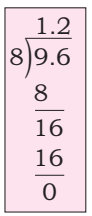
Note
We have to estimate to check that the quotient is reasonably correct. Round 9.6 to 10 and divide by 8. Since 8 goes into 10 once with ye small reminder, the answer 1.2 is reasonably correct.
From the above three cases, we observe that we can also divide the number without considering the decimal point first and then the number of decimal digits of the quotient has to be made equivalent to the number of decimal digits of dividend.
For example, take 52.16 divided by 4
Now, let us divide 5216 by 4
5216 divided by 4 equal to 1304
Now there are 2 decimal digits in the dividend. so the quotient also will have two decimal digits.
Therefore, 52.16 divided by 4 equal to 13.04
Try these
Find the value of the following
1). 46.2 divided by 3 equal to ?
2). 71.6 divided by 4 equal to ?
3). 23.24 divided by 2 equal to ?
4). 127.35 divided by 9 equal to ?
5). 47.201 divided by 7 equal to ?
Example 1.24
Sugarcane juice of 1.5 litre has to be shared equally among five members. What is the share of each member.
Solution
Quantity of sugarcane juice equal to 1.5 litre
Number of persons to be shared equal to 5
Individual share equal 1.5 divided by 5 equal to 0.3 litre
Therefore, the individual share is 0.3 litres.
4) Division of ye Decimal Number by another Decimal Number
Kavitha wants to distribute groundnut balls to all her classmates on her birthday. She has 61 rupees 50 paise in her piggy bank. If each groundnut ball costs 1 rupee.50 paise , how many balls she can get with that amount? In real life, there are situations in which we need to divide ye decimal number by another decimal number
1) Consider, 15.5 divided by 0.5
15.5 divided by 0.5 equal to 15.5 divided by 0.5 equal to ((155 divided by 10)) divided by ((5 divided by 10)) equal to 155 divided by 10 multiplied by 10 divided by 5 equal to 31
Thus, 15.5 divided by 0.5 equal to 31
2) Let us consider 62.5 divided by 0.25
Now, 62.5 divided by 0.25 equal to 62.5 divided by 0.25
Since 62.5 equal to 625 divided by 10 and 0.25 equal to 25 divided by 100 we get,
62.5 divided by 0.25 equal to ((625 divided by 10)) divided by ((25 divided by 100)) equal to 625 divided by 10 multiplied by 100 divided by 25 equal to (625 multiplied by 10) divided by 25 equal to 6250 divided by 25 equal to 250
3) Consider another example 2.25 divided by 0.9
Now, 2.25 divided by 0.9 equal to 2.25 divided by 0.9
Since, 2.25 equal to 225 divided by 100 and 0.9 equal to 9 divided by 10 we get,
2.25 divided by 0.9 equal to ((225 divided by 100)) divided by ((9 divided by 10)) equal to 225 divided by 100 multiplied by 10 divided by 9 equal to 225 divided by (9 multiplied by 10) equal to 225 divided by 90 equal to 2.5
Hence, we can conclude that when both dividend and divisor has same number of decimal digits the division is as simple as the usual division of two natural numbers. When dividend and divisor has different number of decimal digits, first express both the divisor and the dividend in fractional form and then divide.
Try these
Divide the following.
1). 9.25 divided by 0.25
2). 8.6 divided by 4.3
3). 44.1 divided by 0.21
4). 9.6 divided by 1.2
Example 1.25
ye car covers 16.8 kilo metre in 0.21 hours. What is the distance covered by the car in one hour.
Solution
The distance covered by the car in one hour equal 16.8 divided by 0.21
Multiply the divisor by 100 to make it ye whole number. Hence multiply the dividend also by 100.
Therefore, (16.8 multiplied by 100) divided by (0.21 multiplied by 100) equal to 1680 divided by 21 equal to 80
Hence, the distance covered by the car in one hour is 80 kilometre
Example 1.26
The perimeter of ye regular polygon is 17.5 centimetre. Each side measures 2.5 centimetres. Find the number of sides of ye polygon.
Solution
Since it is given that the polygon is ye regular polygon, all sides will be equal.
Therefore, the number of sides of ye polygon equal to perimeter divided by one side
Equal to 17.5 divided by 2.5 equal to 175 divided by 25 equal to 7
(Equal number of decimal digits in both dividend and divisor)
Hence, the polygon has 7 sides
Think
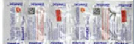
The price of ye tablet strip containing 30 tablets is 22.63 rupee Then how will you find the price of each tablet?
Exercise 1.4
1. Simplify the following.
1) 0.6 divided by 3
2) 0.90 divided by 5
3) 4.08 divided by 4
4) 21.56 divided by 7
5) 0.564 divided by 6
6) 41.36 divided by 4
7) 298.2 divided by 3
2. Simplify the following.
1) 5.7 divided by 10
2) 93.7 divided by 10
3) 0.9 divided by 10
4) 301.301 divided by 10
5) 0.83 divided by 10
6) 0.062 divided by 10
3. Simplify the following.
1) 0.7 divided by 100
2) 3.8 divided by ÷ 100
3) 49.3 divided by 100
4) 463.85 divided by 100
5) 0.3 divided by 100
6) 27.4 divided by 100
4. Simplify the following.
1) 18.9 divided by 1000
2) 0.87 divided by 1000
3) 49.3 divided by 1000
4) 0.3 divided by 1000
5) 382.4 divided by 1000
6) 93.8 divided by 1000
5. Simplify the following.
1) 19.2 divided by 2.4
2) 4.95 divided by 0.5
3) 19.11 divided by 1.3
4) 0.399 divided by 2.1
5) 5.4 divided by 0.6
6) 2.197 divided by 1.3
6. Divide 9.55 kilo gram sweet among 5 children. How much will each child get?
7. ye vehicle covers ye disance of 76.8 kilo metre for 1.2 litre of petrol. How much distance will it cover for one litre of petrol?
8. Cost of levelling ye land at the rate of 15.50 rupee square feet 10,075. rupee Find the area of the land.
9. The cost of 28 books are 1506.4. rupee Find the cost of one book.
10. The product of two numbers is 40.376. One number is 14.42. Find the other number.
Objective type questions
1) 11.4
2) 10.4
3) 0.14
4) 11.2
1) 6.7
2) 67.0
3) 0.67
4) 0.067
1) 0.01
2) 0.1
3) 0.10
4) one point zero
Exercise 1.5
Miscellaneous practice problems
1) Malini bought three ribbons of length 13.92 metre, 11.5 metre and 10.64 metre. Find the total length of the ribbons?
2) Chitra has bought 10 kilo gram 35 gram of ghee for preparing sweets. She used 8 kilo gram 59 gram of ghee. How much ghee will be left?
3) If the capacity of milk can is 2.53 litre, then how much milk is required to fill 8 such cans?
4) ye basket of orange weights 22.4 kilo grams. If each family requires 2.5 kilo gram of orange, how many families can share?
5) ye baker uses 3.924 kilo gram of sugar to bake 10 cakes of equal size. How much sugar is used in each cake?
6) Evalute:
1) 26.13 multiplied by 4.6
2) 3.628 + 31.73 minus 2.1
7) Murugan bought some bags of vegetables. Each bag weight 20.55 kilo gram. If the total weight of all the bags is 308.25 kilo gram, how many bags did he buy?
8) ye man walks around a circular park of distance 23.761 metre. How much distance will he cover in 100 rounds?
9) How much 0.0543 is greater than 0.002?
10) ye printer can print 15 pages per minute. How many pages can it print in 4.6 minutes?
Challenge Problems
11) the distance travelled by Prabhu from home to Yoga centre is 102 metre and from Yoga centre to school is 165 metre. What is the total distance travelled by him in kilometres (in decimal form)?
12) Anbu and Mala travelled from ye to C in two different routes. Anbu travelled from place ye to place B and from there to place C. ye is 8.3 kilo metre form B and B is 15.6 kilo metre from C. Mala travelled from place ye to place D and from there to place C. D is 7.5 kilo metre from ye and C is 16.9 kilo metre from D. Who travelled more and by how much distance?
13) Ramesh paid 97.75 rupee per hour for ye taxi and he used 35 hours in ye week. How much he has to pay totally as taxi fare for a week?
14) An Aeroplane travelled 2781.20 kilo metres in 6 hours. Find the average speed of the aeroplane in kilometre ÷ hour.
15) Kumar’s car gives 12.6 kilo metre mileage per litre. If his fuel tank holds 25.8 litres then how far can he travel?
Summary
To round a decimal
First underline the digit that is to be rounded. Then look at the digit to the right of the underlined digit.
It that digit is less than 5, then the underlined digit remains the same.
It that digit is greater than or equal to 5, add 1 to the underlined digit.
After rounding of, ignore all the digits after the underlined digit.
Adding zeros at the right end of decimal digits will not change the value of the number.
ICT Corner
Number System
Expected Outcome
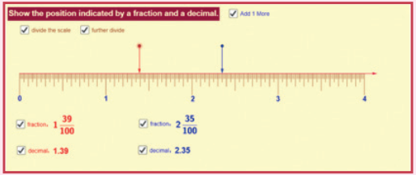
Step 1
Open the Browser and type the URL Link given below (or) Scan the QR Code. GeoGebra work sheet named “Decimal Number Line” will open.
Click on “divide the scale” and “further divide”
Step 2
Move the arrows pointing downwards and click check box, see the fraction and decimals of the position. Also click “Add 1 more” to the given decimal number and check.
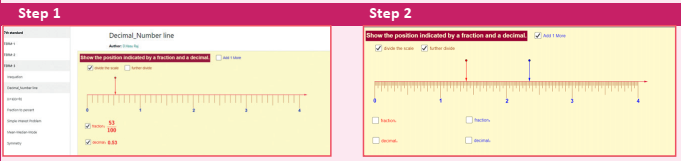
Browse in the link
Decimal Number line: https://www.geogebra.org/m/f4w7csup#material/nezvwyk6
Or Scan the QR Code.